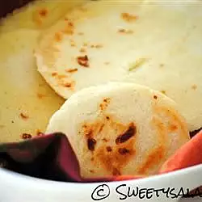

Colombian Arepa

Description
A quick and easy recipt to make delicious Colombian arepas.
They are usually served for breakfast, as a side dish, or even for a quick meal.
Ingredients
- 1 cup warm water
- 1 cup pre-cooked white corn meal (such as P.A.N.)
- 1 cup shredded mozzarella cheese
- 1 tablespoon butter
- ½ teaspoon salt or to taste
- cooking spray
Steps
- Mix water, corn meal, mozzarella cheese, butter, and salt together in a large bowl. Knead until mixed well and the dough has a soft consistency. Form balls the size of a medium orange and place them between 2 sheets of plastic wrap. Flatten with a rolling pin to your desired thickness.
- Cut the dough into circles using a cereal bowl or drinking glass, lip-down, through the plastic wrap. Remove the plastic wrap and remove excess dough.
- Coat a griddle with cooking spray and heat to medium-high. Add arepas and grill until golden brown, about 5 minutes per side. Serve immediately.